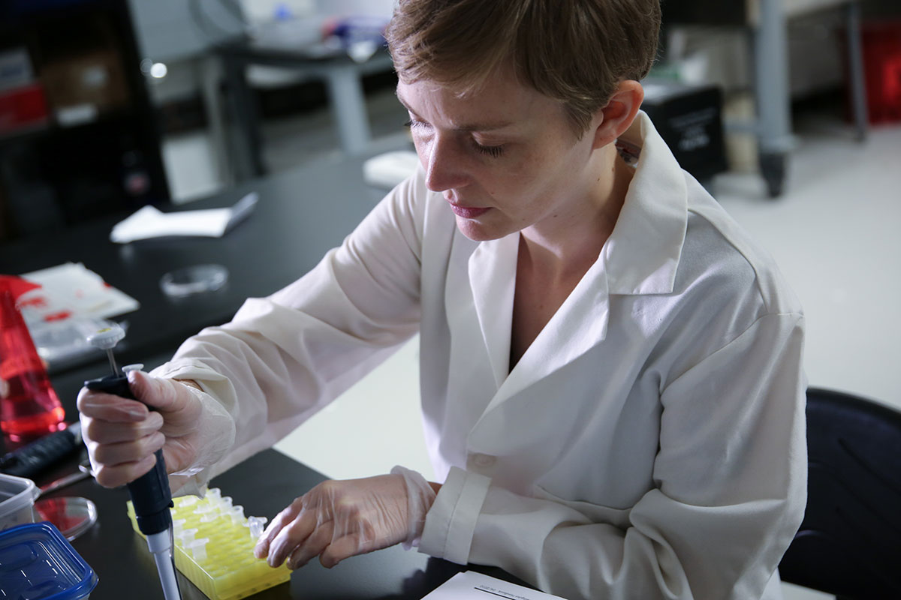

Radical Love es un proyecto basado en la prisionera estadounidense Chelsea Manning. Chelsea Manning es una mujer trangenero estadounidense que se encuentra encarcelada actualmente debido a las denuncias de abuso de poder que expuso en contra del gobierno de Estados Unidos. El nombre “radical love” surge tras los postura radical que manifiesta chelsea respecto a su persona e ideales, y la defensa que esta misma plantea respeto al amor propio El proyecto consistió en la realización de dos máscaras de retrato a tamaño real, impresas en 3D, de la mujer. Para la concepción de dichas máscaras se utilizó la técnica de Fenotipado forense , las muestras de adn de chelsea fueron extraídas a partir de muestras salivares extraídas de sus mejillas y cortes de cabello los cuales fueron enviados Heather Dewey-Hagborg. A partir de lo anteriormente mencionado es que se generaron dos retratos posibles de Chelsea Manning, un primer retrato en el cual se utilizó un algoritmo neutral para su fabricación y un segundo retrato al cual se le aplicó un algoritmo femenino. Los resultados obtenidos a partir de la concepción de ambos retratos y su camparaciòn buscan dar cuenta de los estereotipos respecto a ello como debería lucir un rostro caracterizado con cierto género, visibilizando asì que los algoritmos no están libres de los sesgos de género que mermaron dentro de la sociedad

- 
RADICAL
LOVE
Heather Dewey-Hagborg